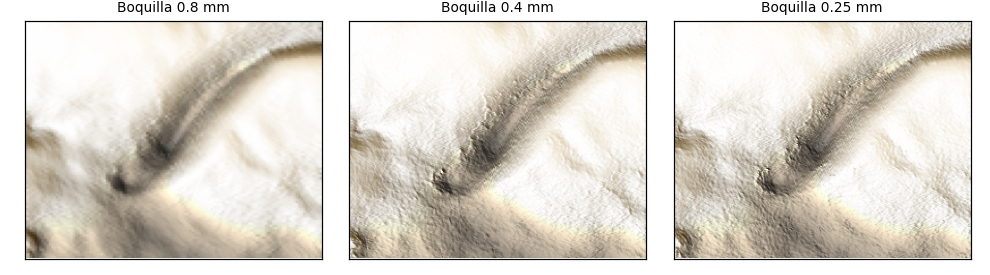
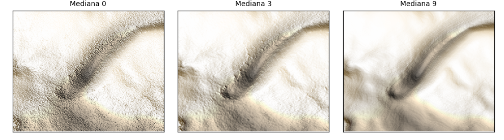
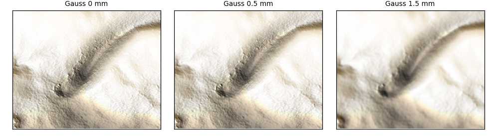
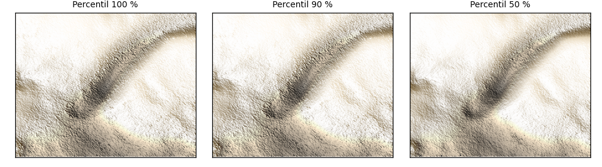
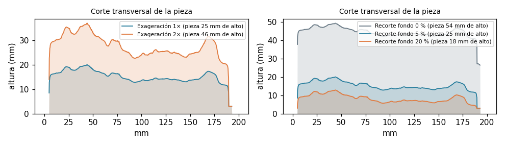

Versión {{VERSION}} · {{AUTHOR}}, {{YEAR}}
Pasos a seguir Ejemplos Valores de ejemplo Parámetros Formatos y archivos Qué se pierde Cómo mejorarlo Programas similares Línea de comandos Requisitos Instalar y actualizar
nube2stl convierte la nube de puntos de un relieve (una cara de una piedra, una placa, una lápida o un friso) en una malla cerrada lista para imprimir en 3D. El método es de tipo «2,5D»:
El resultado siempre es estanco (watertight) y se imprime sin soportes.
Hay un segundo método, el modo 3D, que reconstruye la superficie con Poisson apantallado. A diferencia del mapa de alturas, conserva los socavados (los huecos que quedan bajo las partes salientes), y también da una pieza cerrada. Además, cualquier método puede terminar con una simplificación adaptativa, que reduce los triángulos de 10 a 30 veces sin pérdida visible.
No solo hace relieves. Según lo que se haya escaneado (¿Qué has escaneado?):
Nubes de ejemplo. Para aprender o para enseñar sin escaneo propio:
Ayuda › Abrir un ejemplo (o el enlace de la portada). Hay uno por cada tipo de pieza: una lápida con
inscripción (Relieve), un bloque con dos laterales (Bloque), media columna con letras (Curvo), un panel de
roca con grabados (Grabado), una vasija completa con asas (Objeto) y un terreno de 20 × 10 m con un
muro y un arco (Terreno). Hay además una esquina de friso (dos caras en ángulo) y una lápida gastada
con letras de menos de 1 mm, para Realzar lo pequeño. Son sintéticos: imitan lo que sale de un escáner (ruido, posición y giro cualesquiera, solo lo
que se vería) y se generan en unos segundos la primera vez. Al abrir cada uno, el registro explica qué se puede probar
con él. Desde la consola, python3 ejemplos.py carpeta los escribe todos en una carpeta. Son los mismos que
usan las pruebas automáticas.
lateral1.ply), un bloque, un objeto o un terreno. Si trae más cosas (el suelo, otra cara, el
entorno), se pueden quitar en el propio programa con ✂ Recortar en la vista de la nube.x y z y, si las hay, color e intensidad o normales; con o sin cabecera), LAS / LAZ
y E57 (escáneres láser; varias estaciones se juntan), y mallas OBJ, STL o PLY con caras
(fotogrametría). De una malla se toman puntos repartidos por su superficie, con las normales de la malla (el modo
objeto las aprovecha) y su color por vértice o de la textura. Las coordenadas georreferenciadas (números muy
grandes) se trasladan al origen sin perder precisión. Otros formatos (PCD, RCP…): CloudCompare los guarda como PLY.Paneles (menú Ver). Alrededor de la vista están los paneles Parámetros (a la izquierda), Fichero, Resultado y Registro (a la derecha). Cada uno se arrastra por su título al otro lado, debajo de otro o encima de otro (quedan en pestañas); con los botones de su título se saca como ventana suelta (útil con dos pantallas) o se cierra. Ver los vuelve a mostrar, los pone todos a un lado y tiene Restablecer la vista. La disposición se recuerda al cerrar el programa. Los paneles pequeños crecen solos para enseñar lo que tienen, y si no cabe, se desplaza dentro de ellos.
Asistente (opcional). Si prefieres no tocar parámetros, pulsa Asistente en la barra superior (o Archivo → Asistente…, Ctrl+W). Pregunta qué has escaneado (una cara en relieve, un bloque con sus laterales, un objeto por todos los lados o un terreno o edificio), qué quieres hacer con ello (solo si hay donde elegir: copia, placa o molde; maqueta o fachada; también una inscripción sobre una columna o grabados sobre una roca), con qué impresora la vas a imprimir, cómo está el escaneo y qué tamaño quieres (con atajos para un recuerdo de 60 mm, una pieza normal o una de exposición de 400 mm). En cada paso explica en qué influye cada opción y muestra el cálculo de impresión al momento. Según lo que elijas aparecen unas preguntas u otras: el marco solo si haces una placa o un molde, la boquilla solo en impresoras de filamento… Al terminar rellena las mismas pestañas de siempre y muestra un resumen de qué ha cambiado y por qué. Después puedes retocar cualquier valor a mano. Los pasos siguientes son el camino manual.
Barra de pasos. Encima de las vistas hay una barra con los pasos de siempre: Abrir › Revisar la nube › Tipo y tamaño › Orientar › Vista previa › Generar › Guardar. El paso en el que estás sale en naranja y los hechos con ✔; cada paso es un botón que te lleva a su sitio o hace la acción. Si cambias algún parámetro después de generar, la vista previa, la pieza y el guardado vuelven a quedar pendientes, para que no guardes una pieza que ya no corresponde a lo que ves en las pestañas.
impresora: resolución = boquilla ÷ (2 × escala) (detalles menores que media boquilla no se imprimen);
escaneo: la que deja unos 4 puntos por celda (por debajo solo se rellenaría interpolando).
Las pestañas Nube de puntos y Malla 3D usan el mismo visor:
| Acción | Ratón o teclado |
|---|---|
| Girar | Arrastrar con el botón izquierdo. Mientras giras, un punto naranja marca el centro de giro. |
| Desplazar la pieza | Arrastrar con el botón derecho, con el central o con Mayús + izquierdo · flechas del teclado |
| Acercar / alejar | Rueda: se acerca hacia el punto que hay bajo el cursor, no hacia el centro · teclas + y − |
| Girar alrededor de un detalle | Doble clic sobre él: pasa a ser el centro de giro y la vista se acerca un poco |
| Volver a empezar | Botón Inicial o tecla R · Encuadrar (tecla F) ve toda la pieza sin cambiar la orientación |
Para revisar una zona concreta: doble clic en ella, rueda para acercarte y botón izquierdo para girar a su alrededor. Encima del visor hay vistas rápidas. En la malla: Relieve de frente, Rasante (casi tumbada, resalta el relieve) y Perfil. En la nube: Arriba, Frente y Lado.
| Tecla | Qué hace |
|---|---|
| Ctrl+O | Abrir una nube o una malla |
| Ctrl+W | Asistente |
| Ctrl+P | Vista previa (rápida, más gruesa) |
| Ctrl+G | Generar la pieza |
| Ctrl+S | Guardar la malla |
| Ctrl+R | Registro de piezas |
| F1 | Esta ayuda (pasos a seguir) |
| Ctrl+Q | Salir |
| R o Inicio · F · + y − · flechas · Esc | En el visor (tras hacer clic en él): vista inicial · encuadrar · acercar y alejar · desplazar · borrar la medida |
Dónde verlo: tras Generar, en el panel Resultado la línea Fidelidad al escaneo da el resumen; su enlace ver el mapa de desviación abre la pestaña Malla 3D con la pieza coloreada (también se elige a mano en Malla 3D → Color: desviación). En la ficha PDF es la página 2. Con Vista previa también se calcula, pero con la resolución gruesa de la vista previa.
Al generar, el programa lleva la nube original (sin alisar) a la pieza con la misma escala, giros, espejo, molde, exageración y desplazamientos que ha usado, y mide en cada vértice de la malla final la distancia al plano que forman los puntos del escaneo más cercanos, en milímetros de la pieza:
El resumen aparece en Resultado (Fidelidad al escaneo) y en la ficha PDF, que lleva una página con el mapa, el histograma y los porcentajes de superficie dentro de ±0,1, ±0,25 y ±0,5 mm. Incluye todo lo que hace el programa y también el ruido del propio escáner (a la escala de la pieza). Como orientación: con el objeto sintético a 120 mm, el 95 % de la superficie queda a menos de 0,07 mm; un relieve en modo alturas suele estar por debajo de 0,2 mm en la cara, con desviaciones mayores en los bordes, que ese método convierte en paredes verticales.
La pestaña central Orientación muestra la pieza tal como saldrá, a su tamaño final en mm: giro, espejo, cara invertida, forma (contorno o placa), marco, recorte del borde, molde y exageración del relieve. Se actualiza al momento al cambiar cualquiera de esos valores, y se abre sola al entrar en la pestaña de parámetros Orientar. En Vista rápida es una rejilla gruesa (unas 400 celdas en el lado mayor): sirve para decidir el encuadre, no para ver el detalle fino.
Ver el detalle antes de generar. En el desplegable de la barra, Detalle de la pieza
calcula el mapa de alturas de verdad, con la nube entera y la celda que tendrá la pieza, más el realce
de lo pequeño, el molde, la exageración y el marco. No hace la malla, ni la simplifica, ni calcula el mapa de
desviación. La primera vez tarda unos segundos (3 s con los 10,7 millones de puntos de lateral1). Después,
cambiar el realce, la exageración, el molde o el marco se ve en una décima de segundo, así que es la forma de ajustar el
realce: sube el zoom sobre la letra gastada y mueve los valores. Girar, cambiar el tamaño, la resolución o los
suavizados lo rehace. Capas redondea las alturas a la capa de la impresora: lo que no llega a media capa
desaparece, y se ven los escalones que dejará la impresión. Es lo más parecido a la pieza impresa. En los tipos con
Poisson (objeto, fragmento…) el detalle es solo una vista de frente más fina, sin el realce.
Cuadrar el giro tomando algo como referencia. Las herramientas fijan un giro exacto (desactivan Enderezar automáticamente) y todas se pueden deshacer con Deshacer (en la pestaña Orientar, bajo «Cuadrar el giro»):
| Herramienta | Qué hace | Cuándo usarla |
|---|---|---|
| Línea de referencia | Arrastra con el botón izquierdo sobre la vista, a lo largo de algo que deba quedar recto. Al soltar, la pieza gira lo justo para que esa línea quede horizontal o vertical (la más cercana). | Un renglón de una inscripción, el borde de una cartela, la moldura tallada o el canto de la piedra. Es la más precisa para encajar el relieve en un marco: cuanto más larga la línea, mejor. |
| Líneas talladas | Busca la dirección dominante de las aristas rectas dentro del relieve (no el contorno) y la pone a escuadra. | Relieves con molduras, recuadros o letras; piedras de contorno roto. |
| Por contorno | El mismo cálculo que Enderezar automáticamente (rectángulo mínimo del contorno), pero fijado como giro. | Piezas cuyo contorno exterior es recto. |
| ±90°, ±1°, ±0,1° | Gira esa cantidad (positivo = antihorario). | Poner la pieza de pie o cabeza abajo, y el ajuste fino a ojo con las guías. |
Ejemplo para un relieve con marco: en Pieza pon Forma: rectángulo y Marco: 5 mm; en Orientar, traza una línea sobre el renglón o la moldura más larga; si queda de lado, usa ±90°; afina con ±0,1° mirando cómo corren las guías paralelas a los bordes. Las dos herramientas automáticas conservan el cuarto de vuelta que tengas (no te devuelven la pieza de lado).
El escaneo de una cara de un sillar o una estela casi siempre trae también parte de las caras vecinas: unos centímetros o decímetros de los laterales, el canto superior, a veces solo de algunos lados. En los ficheros de ejemplo es entre el 8 y el 20 % de los puntos, con laterales de 25 a 55 cm de fondo. Los métodos alturas y 3d se quedan con una sola altura por celda (la de la cara) y esos puntos se pierden; el método objeto necesitaría el bloque escaneado entero. el botón Bloque (método bloque) es el término medio:
Con lateral3 a 200 mm sale un bloque de 200 × 140 × 51 mm (con 3d, 25 mm de grueso y laterales lisos),
cerrado, en unos 2 min y con unos 4,6 GB de memoria. Para un bloque más fino, baja Profundidad máx.: el bloque se corta a esa profundidad.
La esquina de un friso, un sillar de esquina con inscripción o un ara con dos caras labradas tienen dos caras que importan igual. El método bloque está pensado para una cara principal y laterales cortos: la segunda cara solo pasa por Poisson y sale más blanda. Para estas piezas:
Cada cara tiene su propio mapa de alturas, con todo el tratamiento del modo alturas (relleno, picos, suavizados, aristas), y la pieza es el bloque que queda detrás de las dos: cada cara llega hasta donde llega la otra, y por detrás se cierra con traseras paralelas a ellas. Arriba queda la cara mayor (con darle la vuelta, la otra, o la que marques con tres puntos). La malla se hace con tetraedros en marcha sobre una rejilla 3D del tamaño de celda de los mapas: sale cerrada siempre. Si una cara es más corta a lo largo de la arista, se alarga con su borde (el registro lo avisa).
Con una sola cara y la otra en el modo alturas, Plano de la cara «nube» miraría la pieza desde la esquina, entre las dos; la nota bajo ese campo lo avisa: elige «cara» o marca tres puntos.
Los métodos alturas y 3d tratan la nube como un relieve visto de frente: buscan la cara principal, descartan lo que queda detrás y cierran la pieza con una base o una trasera plana. Si el objeto está escaneado por todos los lados, elige Objeto en ¿Qué has escaneado? (método objeto), o lo mismo en el asistente:
Cómo funciona: se submuestrea la nube a la resolución de impresión y se quitan los puntos sueltos y los grupos separados
(restos de la mesa o del soporte). Si el PLY trae normales (nx ny nz, como guardan algunos escáneres) se usan
tal cual. Si no, se estiman y se orientan hacia fuera: se propagan por la superficie entre puntos vecinos casi paralelos;
donde hay aristas vivas o paredes finas (un labio, el borde de una hoja) la propagación no es segura, y ahí decide la
visibilidad: todo lo escaneado se vio desde fuera, así que desde el lado exterior de cada punto los rayos escapan del
objeto y desde el interior chocan con él. Después, Poisson apantallado da directamente un sólido cerrado, con sus huecos
pasantes (asas) y socavados.
Lo que no se escaneó lo rellena Poisson con la superficie más lisa posible: el interior de una vasija solo existe hasta donde se vio desde la boca, y por debajo la pieza sale maciza (el laminador la vaciará con el relleno). Si una zona sale con una «burbuja» o una lámina rara, suele faltar escaneo allí o hay normales mal orientadas; en ese caso ayuda guardar las normales desde el programa del escáner.
Para probarlo sin escaneo propio: Ayuda › Abrir un ejemplo › Vasija completa, o
python3 generar_objeto_sintetico.py objeto.ply, que crea una
vasija sintética de 300 mm con asas, banda decorada, boca abierta y el fondo sin escanear (--eje y la deja con Y
hacia arriba; --normales guarda también las normales). A 150 mm se genera en unos 45 s: una pieza cerrada
de unos 47.000 triángulos tras simplificar.
Una inscripción en un miliario o en el fuste de una columna no está en un plano: mirada de frente, las letras de los lados se ven estrechas y el relieve, montado sobre la curva. Con Curvo en ¿Qué has escaneado? (Superficie: cilindro) el programa:
Si el escaneo da la vuelta entera, se corta por el tramo con menos puntos; si la costura cae en mal sitio (en medio de una palabra), recorta en la vista de la nube una franja para que el hueco quede donde quieras. Si el cilindro sale con un radio enorme, la cara era casi plana y con Relieve da lo mismo. Para una pieza troncocónica o abombada (una vasija) el cilindro es una aproximación: lo que se separe de él aparece como relieve.
La herramienta de medir de la malla da los mm reales a lo largo del arco: útil para comprobar el desarrollo o medir la altura de las letras.
En un panel de grabados, la roca tiene jorobas y pendientes de decenas de centímetros y el grabado mide unos pocos milímetros. Con Relieve, la pieza reproduce sobre todo la forma de la roca y el grabado apenas se nota. Con Grabado en ¿Qué has escaneado? se resta a las alturas su forma general: en cada punto, la superficie suave (cuadrática) que mejor se ajusta a su entorno, de un ancho de Quitar forma de la roca mm. Queda solo lo más estrecho que eso, el grabado, sobre una placa plana que se puede exagerar (Exageración del relieve) y convertir en molde. Es lo que en arqueología se llama modelo de relieve local o residual.
Si la roca tiene partes muy inclinadas (más de 60–70°) respecto a la vista, el mapa de alturas pierde detalle en ellas: recorta el panel en zonas más planas o usa «Mirar desde» para mirarlo de frente.
En Curvo, debajo de los botones, se elige la superficie:
Con el botón Fragmento (una vasija a partir de un fragmento), el fragmento de una pieza a torno se convierte en la vasija entera: se busca el eje, se saca la sección de la pared (dentro y fuera) y se gira 360°. Sale la vasija en la altura que cubre el fragmento; si el fragmento no llega al fondo, se cierra con el corte plano de la base. Cuanto más abarque el fragmento alrededor del eje, más fiable el diámetro (el registro avisa por debajo de 30°). Como un fragmento no dice qué lado es la boca, si sale al revés pon Arriba = −z. Archivo › Guardar el perfil de la vasija (SVG) escribe el perfil a tamaño real para el dibujo arqueológico: la sección en negro a un lado del eje, la silueta al otro y una escala gráfica (se abre en Inkscape o Illustrator). La propuesta automática reconoce los fragmentos (una pieza curva con dos paredes) y las caras de piezas a torno.
Escanea el anverso y el reverso por separado. Abre el anverso y elige Archivo › Añadir el reverso (pieza de dos caras)…. Al generar, el reverso se pone debajo de la cara: se calcula su mapa de alturas mirándolo desde su lado, se espeja (se ve desde detrás) y se gira para que los contornos coincidan. Grosor base pasa a ser el alma entre las dos caras. La nota bajo Quitar grupos sueltos lo resume y permite:
Si el canto está escaneado y las dos nubes se solapan, mejor únelas y usa Objeto: el grosor y el giro serán los reales.
Un escaneo desde dentro es la piel de un hueco. Con el botón Interior hay dos piezas (Interior, en la pestaña Pieza):
Las normales se orientan hacia dentro del hueco, como si se escanease desde dentro. Recorta antes lo que se vea por puertas y ventanas (el exterior). La propuesta automática toma por interior una superficie cerrada de más de 1,5 m; si es un objeto grande escaneado por fuera, elige Objeto.
Con el escaneo antiguo abierto, Archivo › Comparar con otro escaneo (deterioro)… pide el nuevo y lo alinea en la misma ventana que unir nubes (ya alineadas, por puntos o automática). Después se afina con un ICP robusto: las zonas que han cambiado no tiran de la alineación, que se apoya en lo que sigue igual. Para cada punto del escaneo nuevo se mide la distancia con signo a la superficie del antiguo:
El resumen da qué parte de la superficie ha perdido o ganado más de un umbral (por defecto, tres veces el ruido de
la comparación, que también se da: por debajo de él no hay cambio real) y los máximos. Se puede guardar un
informe PDF (planta coloreada, histograma y resumen) y la nube coloreada (PLY). Desde la consola:
python3 comparar.py antes.ply despues.ply informe.pdf.
Los LAS del PNOA y de casi todos los vuelos traen la clase de cada punto (suelo, vegetación, edificios,
agua, ruido…). Al abrir uno, la nota bajo Quitar grupos sueltos dice cuántos puntos hay de cada clase y deja
elegir: todas (menos el ruido, que nunca se usa), solo suelo (el terreno desnudo, sin árboles ni casas:
lo mejor para un yacimiento bajo el bosque), suelo y edificios (una maqueta sin árboles) o elegir… cada
clase. Si el fichero no trae clases, Quedarse solo con el suelo lo calcula con un filtro morfológico progresivo:
el punto más bajo de cada celda, «abierto» con ventanas cada vez mayores; lo que sobresale más de lo que permite la
pendiente del terreno no es suelo. La elección se guarda en los ajustes; en la consola, --clases 2,6 o
--clases suelo.
Una pieza escaneada en dos vueltas (de pie y después tumbada para sacar la base), el anverso y el reverso, o dos tandas de fotogrametría de un monumento: con la nube principal abierta, Archivo › Unir otra nube… (o el enlace Unir otra nube… bajo Quitar grupos sueltos) abre una ventana con las dos nubes, la principal en azul y la añadida en naranja. Hay tres maneras de encajarlas:
Tras alinear, la ventana dice qué parte de la añadida cae sobre la principal y la separación media allí, con un aviso si algo no cuadra. Con el color zona común la parte solapada se ve en verde: compruébala girando la vista antes de pulsar Unir.
Al unir, se quitan de la nube añadida los puntos que repiten la zona común (para que no haya doble piel) y todo
sigue como con una sola nube: recortes, tipo de pieza, generar. La unión se guarda en los ajustes, como los recortes, y
la recuerdan «Repetir», el registro de piezas y la consola (--ajustes). La nota bajo Quitar grupos
sueltos dice qué nubes están unidas y permite quitar la última o todas. Si cambias las Unidades de la
nube de la principal, las uniones se quitan, porque estaban encajadas con las anteriores.
Guardar lo unido para no repetirlo. Hay dos maneras, y en las dos se abre sin volver a alinear:
Todos los datos de esta sección están medidos con lateral3.ply: una cara de piedra de unos
1,3 × 0,8 m escaneada con 3,2 millones de puntos. Salvo que se diga otra cosa, se usan los valores por defecto:
lado mayor de 200 mm, boquilla de 0,4 mm, capa de 0,2 mm, calidad alta, resolución y simplificación automáticas.
Los tiempos son de un portátil con 4 núcleos.
| Lado mayor | Resolución (limita) | Celda en la pieza | Triángulos | STL | Relieve | Tiempo |
|---|---|---|---|---|---|---|
| 100 mm | 2,5 (boquilla) | 0,20 mm | 17.944 | 0,9 MB | 9,8 mm · 49 capas | 12 s |
| 200 mm | 1,2 (boquilla) | 0,19 mm | 76.850 | 3,8 MB | 19,1 mm · 95 capas | 22 s |
| 400 mm | 1,1 (escaneo) | 0,35 mm | 182.400 | 9,1 MB | 38 mm · 190 capas | 21 s |
Al duplicar el tamaño, la celda en la pieza se mantiene en media boquilla (0,2 mm) y los triángulos se multiplican por unos 4. A 400 mm, el escaneo ya no da para 0,2 mm: la celda sube a 0,35 mm y una pieza más grande no gana detalle, solo tamaño. Además, a 400 mm el recuadro avisa de que ✘ no cabe en una cama de 220 × 220.
| Boquilla | Resolución (limita) | Celda en la pieza | Triángulos | STL |
|---|---|---|---|---|
| 0,25 mm | 1,1 (escaneo) | 0,17 mm | 91.202 | 4,6 MB |
| 0,4 mm | 1,2 (boquilla) | 0,19 mm | 76.850 | 3,8 MB |
| 0,6 mm | 1,8 (boquilla) | 0,29 mm | 34.412 | 1,7 MB |
| 0,8 mm | 2,5 (boquilla) | 0,40 mm | 35.890 | 1,8 MB |

Zona de 50 × 40 mm de la pieza. Con 0,8 mm se pierden la textura de la piedra y los bordes de la incisión. Entre 0,4 y 0,25 mm casi no hay diferencia, porque a 200 mm el escaneo no tiene más detalle que dar.
| Ajuste | Tolerancia | Triángulos | STL | Error p99 | Error máximo |
|---|---|---|---|---|---|
| Sin simplificar (100 %) | — | 2.459.212 | 123 MB | 0 | 0 |
| Calidad normal | 0,10 mm | 19.212 | 1,0 MB | 0,091 mm | 1,06 mm |
| Calidad alta | 0,05 mm | 76.850 | 3,8 MB | 0,034 mm | 0,11 mm |
| Calidad máxima | 0,025 mm | 153.692 | 7,7 MB | 0,022 mm | 0,066 mm |
| Alta con capa de 0,1 mm | 0,025 mm | 153.692 | 7,7 MB | 0,022 mm | 0,066 mm |
| Alta con capa de 0,3 mm | 0,075 mm | 38.424 | 1,9 MB | 0,059 mm | 0,30 mm |
La simplificación quita entre el 94 % y el 99 % de los triángulos y el fichero pasa de 123 MB a 1–8 MB. La calidad normal ya deja algún punto suelto con un error de 1 mm, y por eso la opción por defecto es alta. Una capa más fina pide más precisión, porque el laminador reproduce detalles más finos en vertical.

Suavizado mediana 0, 3 y 9 celdas. Sin suavizado se ve el «grano» del escáner, más fino que lo que imprime la boquilla. Con 3 desaparece el ruido y se conservan los bordes de la incisión. Con 9 los bordes se redondean y se pierden los detalles pequeños.

Suavizado gaussiano 0, 0,5 y 1,5 (unidades de la nube, es decir, mm de la piedra). A diferencia de la mediana, el gaussiano también redondea los bordes. Es útil para un acabado «pulido», no para quitar ruido.

Percentil 100, 90 y 50, sin suavizado. Con 100 se toma el punto más saliente de cada celda y el ruido del escáner queda más marcado. Con 50 se toma la mediana, más lisa pero ligeramente hundida (incluye puntos de los laterales de las incisiones).

Corte transversal por el centro de la pieza. Izquierda: con exageración 2× el relieve pasa de 19 a 38 mm (de 95 a 190 capas) y la pieza de 25 a 46 mm de alto; la base sigue midiendo 3 mm. Derecha: sin recorte del fondo (0 %), los puntos más bajos del contorno, que son restos de los laterales del bloque, obligan a una base de 54 mm. Con un 5 % la pieza mide 25 mm, y con un 20 % 18 mm, aunque ya se aplanan las zonas bajas del propio relieve.
Puntos de partida para ajustar después. Lo que no se indica se deja con su valor por defecto. Son las mismas recetas que aplica el asistente.
{{RECETAS}}En cada parámetro se indican sus unidades. «Unidades de la nube» son las del escaneo, normalmente mm reales del objeto. «mm de la pieza» son los milímetros de la pieza impresa, después de escalar. Van en el mismo orden que en la ventana: primero el tipo de pieza y después pestaña por pestaña. Cada parámetro solo aparece en la ventana cuando cuenta con el tipo de pieza elegido.
Los ocho botones de arriba de los parámetros
Lo eligen los botones de ¿Qué has escaneado?: Relieve y Curvo = alturas (3d con «Tiene partes que vuelan»), Grabado = alturas, Bloque = bloque, Objeto, Terreno, Fragmento e Interior = objeto
En los ficheros de ejemplo (lateral1–3), que son bajorrelieves, los dos métodos dan resultados casi
idénticos (las diferencias se limitan a las aristas del bloque). El modo 3D marca la diferencia en altorrelieves y figuras con partes despegadas.
Valores de ejemplo: alturas para ajustar y para casi todos los relieves · 3d para la versión final de un altorrelieve · bloque para reproducir el sillar con sus laterales · objeto para estatuas, vasijas, capiteles y cualquier pieza escaneada por todos los lados.
Solo modo objeto · sí/no · por defecto no · botón Terreno de ¿Qué has escaneado?
Para escaneos que solo tienen la superficie de arriba: un terreno, una ruina, un puente, un acueducto o un edificio sacado por fotogrametría desde el aire o desde el suelo. Poisson necesita un sólido cerrado y, si el escaneo no rodea el objeto, se inventa una superficie para cerrarlo: una «burbuja» lejos de los puntos. Con esta opción, en vez de cortar la base, el programa pone paredes verticales en todo el contorno de la planta (desde el borde del escaneo hasta abajo) y una base plana Grosor de base mm por debajo del punto más bajo, y con ellas decide también qué lado de cada superficie es el de fuera (el que se ve desde arriba o desde los lados). Lo que tenga el escaneo se conserva en 3D: los arcos y vanos pasantes siguen pasantes. Con el acueducto de ejemplo (37 × 16 × 4 m) da una maqueta cerrada de 200 × 86 × 26 mm en menos de un minuto, a 0,03 mm de media del escaneo.
Si no se activa y Poisson inventa más del 3 % de la superficie, el registro lo avisa y lo sugiere. Lo inventado se ve gris en el mapa de desviación. Si sobra terreno alrededor o restos sueltos, recórtalos antes en la vista de la nube.
Valores de ejemplo: sí para terrenos, ruinas y monumentos sin la parte de abajo · no para objetos escaneados por todos los lados.
plano / cilindro / cono / revolucion · por defecto plano · botón Curvo (y su desplegable) o Fragmento de ¿Qué has escaneado?
Sobre qué superficie está el relieve. plano: lo normal; la cara se mira de frente o desde el lado elegido en Mirar desde. cilindro: se ajusta un cilindro a la nube y la cara se desenrolla como una placa plana, con las medidas reales a lo largo del arco (consulta Relieves sobre una superficie curva). Con cilindro la cara se mira siempre desde fuera y Mirar desde no cuenta.
Valores de ejemplo: cilindro para miliarios, fustes de columna, aras cilíndricas, sellos cilíndricos · cono para piezas troncocónicas · revolucion para la decoración de una vasija abombada (o, con el método objeto, para reconstruir la vasija a partir de un fragmento: ver) · plano para todo lo demás.
auto, mm, cm, m o pulgadas · por defecto auto
Al abrir la nube se pasa a milímetros, y desde ahí todas las medidas (Profundidad máx., Resolución, Quitar picos…) están en mm. En automático, una nube de menos de 20 unidades de lado se toma como metros (una piedra no mide 2 cm) y lo demás como milímetros; el registro dice qué ha supuesto. Si te equivocas, la pieza a escala o «tamaño real» saldría 1000 veces más grande o más pequeña: con el lado mayor final no importa, porque se escala igual. Al cambiarlo, la nube se vuelve a leer.
Si lo supuesto es dudoso (se ha tomado como metros, la pieza mide menos de 5 cm, o es una malla de fotogrametría de 20 a 5000 «mm», que suelen venir en metros), al abrirla se pregunta con un cuadro que dice cuánto mediría la pieza en mm, cm, m y pulgadas. Con el destino Copia a tamaño real se pregunta siempre que estén en auto.
Sí/no · por defecto sí
Al abrir la nube se lee entera y no se pierde nada: los puntos de los grupos sueltos se pintan en rojo en la
pestaña Nube de puntos, junto con el resto, y la ficha del fichero dice cuántos son. Si alguno es parte de la
pieza (un asa separada por un hueco del escaneo, una pieza en dos trozos), haz clic sobre él en la vista: se
pone en verde y se conserva; otro clic lo vuelve a quitar. La cámara no se mueve, así que puedes ir eligiendo varios.
Desmarcar la casilla conserva todos a la vez. Todo se aplica al momento, sin volver a leer el fichero. Los grupos
elegidos se guardan con los ajustes (por sus centros), así que «Repetir» desde el registro los vuelve a conservar; al
abrir otra nube o procesar un lote se empieza sin ninguno. Para buscarlos se agrupan los puntos en una rejilla de unos 300 vóxeles de lado, se buscan las partes conectadas y
se quitan las que tienen menos del 2 % de los puntos de la mayor: puntos sueltos, reflejos, trozos de suelo o de
soporte separados de la pieza. Se hace antes que nada, así que el plano de la cara, las medidas y la vista de
orientación ya no se ven afectados por ellos. Con la vasija sintética quita 548 de sus 595 puntos sueltos (los demás
están pegados a la superficie y los quitan los filtros de cada método); con lateral3, unos retazos de la
cara trasera separados del bloque. El número de puntos quitados queda en la ficha PDF y en el registro de piezas.
mm de la pieza · por defecto 200 · «tamaño real» = 1:1
Escala todo para que el lado mayor de la pieza mida esto (en modo objeto, el lado mayor en 3D, alto incluido). Con «tamaño real» se exporta en las unidades de la nube. También puedes escalar después en el laminador, pero entonces la base y el marco escalan con la pieza y dejan de medir lo que pusiste.
Valores de ejemplo: 200 mm · 60–100 para recuerdos · 300–400 para exposición (comprueba la cama).
Por defecto «según lado mayor» (0) · 1 = tamaño real
Escala exacta de la réplica: con 5, cada 5 mm de la piedra son 1 mm de la pieza. Si la fijas, manda sobre el lado mayor final (que se desactiva). Es lo que conviene para documentar y comparar réplicas, porque la escala queda redonda y consta en la ficha PDF. Necesita que las unidades de la nube sean las correctas.
Valores de ejemplo: 1 (tamaño real) · 2, 5, 10 · 20 para piezas grandes.
Botones de arriba del panel Parámetros · por defecto «Imprimir una réplica»
Imprimir una réplica es lo de siempre: una pieza a escala para la impresora, con el tamaño, la boquilla, las capas y la cama de la impresora mandando sobre el detalle y la simplificación.
Copia sin impresora es una copia digital que no va a tu impresora tal cual: para archivarla y verla, fresarla, imprimirla en gran formato por piezas (o en un servicio externo) o medir sobre ella. Por defecto a tamaño real (1:1), o a la escala exacta que pongas en Escala 1: (10 = 1:10, 50 = 1:50 para una maqueta, 0,5 = el doble). Cambia esto:
La pestaña Tamaño enseña entonces la medida real (en m o cm), el detalle, hasta dónde llega Poisson en los tipos 3D (en piezas muy grandes no baja de unos 20 mm con la profundidad automática: pedir menos resolución no da más detalle) y la simplificación. Al guardar, propone el formato del uso y añade la escala al nombre («_1a1», «_1a50»).
Para el máximo detalle de una pieza grande: Resolución de unos 20 mm (Poisson sube entonces a profundidad 11, su máximo automático). Si la nube viene de una malla (OBJ, STL, PLY con caras), el Alisado (3D) no se aplica: los puntos sacados de una malla no tienen ruido de medida. En el acueducto de 37 m (malla de 242 000 vértices, aristas de unos 5 cm) la copia queda a unos 3,5 mm de la malla original (mediana) con resolución 20, en unos 4 minutos y 7 GB; con los valores automáticos, a unos 6 mm en menos de un minuto.
Las mallas y nubes georreferenciadas (coordenadas UTM) se llevan a un origen cercano al leerlas, para no perder precisión (el registro dice qué origen se ha restado).
Solo con «Copia sin impresora» · por defecto archivo
Valores de ejemplo: contorno para una copia de la piedra · rectángulo para placas y moldes.
Factor · por defecto 1
Multiplica las alturas del relieve sin cambiar el tamaño en planta. Los relieves muy erosionados (como
lateral3) o las piezas impresas muy pequeñas ganan legibilidad con 1,5–3. Ten en cuenta que deforma la
geometría real; no lo uses si buscas una réplica fiel.
Valores de ejemplo: 1 (real) · 1,5–2 para relieves gastados o piezas pequeñas · 3 o más solo como efecto.
Todos los tipos de pieza · factor · por defecto no (1)
Realza solo los detalles de poco relieve, hacia fuera y hacia dentro (letras gastadas, incisiones finas, una palma casi borrada), sin tocar las formas grandes. A diferencia de la exageración, que lo multiplica todo, aquí cada detalle se mide respecto a su entorno (Anchura del detalle) y crece según su profundidad. Los tres umbrales van en mm de la piedra, lo que mides en la nube: así se eligen mirando el escaneo y no cambian si luego haces la pieza a otro tamaño. Debajo de los campos se ve cuánto es cada uno en la pieza. Con «auto» valen lo que en la pieza son 0,1 mm, 0,5 mm y 3 mm.
Lo que se ha añadido se ve en el mapa de desviación (en rojo lo que ha subido, porque sobra material respecto al escaneo; en azul lo que se ha hundido). Para verlo antes de generar, pon la vista Orientación en Detalle de la pieza y acerca el zoom: el realce se actualiza al momento al cambiar los valores; con Capas, como quedará impreso. Para probarlo: Ayuda › Abrir un ejemplo › Lápida gastada.
Vale para todos los tipos de pieza. En los que se hacen con el mapa de alturas (relieve, curvo, grabado) se aplica a las alturas. En los que se hacen con Poisson (objeto, fragmento, interior, terreno, bloque, o relieve con socavados) se aplica a la malla terminada: cada detalle se mide respecto a una superficie suave ajustada a su entorno, que sigue las curvas de la pieza (una vasija, una columna) sin tomarlas por detalle, y se mueve a lo largo de la normal. Ahí el realce también se apaga junto a una arista viva (el corte de la base, la esquina de un sillar), donde la superficie de al lado tiene otra orientación. En estos tipos no se ve en la vista previa, solo en la pieza hecha y en su mapa de desviación.
Un ejemplo con números. En lateral1 (3,5 m impresos a 200 mm: 1 mm de la piedra = 0,057 mm
de la pieza) hay una «F» muy gastada, hundida 1,55 mm en la piedra. Sin realce quedaría en 0,09 mm en la pieza, menos
de media capa: no se imprime. Con ×4, desde 1 mm, hasta 5 mm y anchura 70 mm (lo que se mide en la piedra: la F tiene
trazos de unos 45 mm) pasa a unos 0,23 mm, algo más de una capa. Si luego la haces a 400 mm no hay que tocar nada: la
nota de debajo de los campos dice cuánto es en la pieza.
El entorno con el que se mide cada detalle es la mediana de lo que lo rodea: una letra gastada junto a una letra grande o una moldura se mide respecto a la piedra, no respecto a ellas (que ocupan menos de la mitad del entorno). Si «Anchura del detalle» es menor que el trazo, solo se realzan sus bordes; súbela a algo más que el trazo más ancho.
Valores de ejemplo: ×2 con todo en «auto» (lo que ocupa menos de una capa de 0,2 mm pasa a ocupar una o dos) · «desde» un poco por debajo de lo que mide en la piedra la letra que quieres sacar, y «hasta» unas 3–5 veces más · ×4–8 si la pieza es mucho más pequeña que la piedra · ×1,5 si solo quieres asegurar que se vea.
mm de la piedra · por defecto auto (lo que en la pieza son 0,1 mm)
Profundidad del detalle, medida en la piedra, que recibe el realce entero. Su mitad es el umbral: por debajo no se toca nada. Si el escaneo es ruidoso (fotogrametría con poca luz), súbelo para no realzar el grano de la piedra.
mm de la piedra · por defecto auto (lo que en la pieza son 0,5 mm, y al menos el triple de «desde»)
Profundidad del detalle, en la piedra, a la que el realce ya es nulo. Lo que pasa de esto (los relieves que ya se ven bien) queda como está.
mm de la piedra · por defecto auto (lo que en la pieza son 3 mm)
Radio del entorno, en la piedra, con el que se mide la altura de cada detalle: algo mayor que el trazo más ancho que se quiere realzar. Si es pequeño, el fondo de los trazos anchos se toma por entorno y solo se realzan sus bordes; si es muy grande, las ondulaciones suaves de la losa también cuentan como detalle.
Solo modo alturas, tipos Grabado y Curvo · mm reales · por defecto no · al pulsar Grabado, ¼ del lado mayor de la nube
Resta a las alturas la forma general de la superficie: en cada punto, la superficie suave que mejor se ajusta a un entorno de este ancho. Quedan solo los detalles más estrechos: el grabado. Debe ser 3–5 veces el trazo más ancho del grabado; con un valor pequeño también se aplana el grabado y con uno muy grande vuelve la forma de la roca. El cálculo de impresión y la vista Orientación lo reflejan al momento. Consulta Grabados sobre roca.
Valores de ejemplo: 150–300 mm para un panel de grabados de 1 m con trazos de 1–3 cm · 50–100 mm para marcas de cantero o grafitos finos en un sillar abombado · no para una lápida o un relieve (se perdería el volumen de las figuras).
Invierte las alturas: lo saliente pasa a estar hundido. Sirve para imprimir un molde para arcilla, yeso o silicona, o un sello. Normalmente conviene combinarlo con Espejar, para que la copia sacada del molde quede del derecho.
Valores de ejemplo: Actívalo solo para moldes o sellos; normalmente con marco y forma rectángulo.
mm de la pieza · por defecto 3
Espesor macizo que se añade por debajo del punto más bajo del relieve (en modo objeto, solo con Abierto por abajo). Con 2–3 mm basta para una pieza pequeña; para piezas grandes o que vayan a colgarse, usa 4–6 mm.
Valores de ejemplo: 3 mm en general · 2 mm para piezas pequeñas · 4–6 mm para placas que se cuelgan o moldes.
mm de la pieza · 0 = sin marco
Añade alrededor de la pieza un borde de ese ancho, a la altura del percentil 98 del relieve, es decir, casi a ras de lo más saliente. Protege los bordes, da aspecto de placa y facilita colgarla o enmarcarla. El lado mayor final incluye el marco.
Valores de ejemplo: 0 · 5–10 mm para placas · 10 mm o más para la pared de un molde.
Sí/no · por defecto no · solo tipo Bloque · pestaña Pieza
Dos caras con relieve que se juntan en una arista, cada una con su propio mapa de alturas (consulta Esquinas). Sin esto, la segunda cara se trata como un lateral (solo Poisson). Con ella no cuenta Profundidad máx.: el bloque llega hasta donde llega la otra cara.
Valores de ejemplo: sí para la esquina de un friso o un sillar con dos caras labradas · no para una cara con laterales cortos.
no / corte / negativo · tipo Interior · pestaña Pieza
Para escaneos desde dentro (consulta Interiores). corte: maqueta sin el techo, con la sala como un hueco dentro de un bloque. negativo: el volumen del hueco como un sólido.
mm reales de la nube sobre el suelo · 0 = tres cuartos del alto · solo interior en corte
Por dónde se quita el techo. Bájala para ver mejor la planta; súbela para conservar el arranque de la bóveda.
Solo modo objeto · mm de la pieza · por defecto 1 · 0 = no cortar
Corta el objeto por abajo a esta altura sobre su punto más bajo y lo cierra con una tapa plana, para que apoye en la cama. Un pie redondeado o un fondo sin escanear necesitan unos milímetros; un objeto que ya tiene una base plana, 0,5–1 mm. Sin corte, el objeto apoya en su punto más bajo y puede necesitar soportes. La altura final no incluye lo cortado.
Valores de ejemplo: 1 mm · 2–5 mm para pies redondeados o fondos mal escaneados · 0 si se imprime con soportes.
Solo modo objeto · z, -z, y, -y, x, -x · por defecto z
Eje de la nube que quedará hacia arriba al imprimir. Con un signo menos, el objeto queda cabeza abajo respecto a ese eje. Míralo en la vista Orientación, que muestra el objeto de frente y de pie sobre la cama.
Valores de ejemplo: z para la mayoría de escáneres · y para muchos modelos de fotogrametría.
Modos alturas, 3D y bloque · auto, arriba, frente, detrás, izquierda, derecha, abajo · por defecto auto · pestaña Orientar
Desde dónde se mira la cara del relieve. En auto, perpendicular al plano principal de la nube, que es lo normal en una lápida, un relieve o una inscripción. Las demás miran desde ese lado según los ejes de la nube (frente = desde −Y, arriba = desde +Z, derecha = desde +X…). Sirve cuando el plano principal no es la cara que quieres: en un escaneo aéreo de un edificio o de un acueducto el plano principal es el suelo, y con frente se saca la fachada o la arcada como placa en relieve. Conviene recortar antes en la vista de la nube lo que no sea esa fachada y subir la profundidad máxima lo que mida el edificio de fondo. El resultado se ve en la pestaña Orientación; los giros, invertir y espejar funcionan igual.
Valores de ejemplo: auto casi siempre · frente/detrás/izquierda/derecha para fachadas · arriba para una maqueta de terreno vista en planta.
nube / cara / puntos · por defecto nube · solo con Mirar desde auto · pestaña Orientar
Cómo se busca el plano de la cara, que decide desde dónde se mira (la pieza se mira perpendicular a él):
Unidades de la nube · por defecto auto (250 mm, o la cuarta parte del lado mayor de la cara si es más)
Para elegir el valor, debajo del campo (pestaña Orientación y paso Acabado del asistente) aparecen las medidas de la nube: tamaño de la cara, profundidad del relieve y hasta dónde llegan los puntos por detrás de la cara y por delante, y cuánto mide 1 unidad en la pieza. En modo bloque dice además el grosor que saldría con el valor actual y qué valor poner para algunos grosores (15, 20, 30 mm…).
Se descartan los puntos que estén más de esta distancia por detrás del plano medio de la cara. Sirve para eliminar las caras superior, inferior y laterales del bloque, que en el escaneo aparecen detrás del relieve. Bájalo si en los bordes aparecen rampas o paredes. Súbelo si el relieve es muy profundo (más de 25 cm) y se recortan partes. Si deja fuera más del 5 % de los puntos, el registro lo avisa: con un terreno en pendiente o un edificio visto de frente, casi seguro que hay que subirla.
En modo bloque hace lo contrario de descartar: es hasta dónde llega el bloque por detrás. Los laterales escaneados se conservan hasta esa profundidad y ahí se pone la trasera plana (o antes, si el escaneo no llega tan lejos).
Auto deja 250 mm en piezas normales (una lápida, un bloque) y crece con las grandes: en la fachada de un acueducto de 37 m son unos 9 m (con 250 fijos quedaba fuera casi la mitad de la nube).
Valores de ejemplo: auto · 250 para una cara de un bloque (en modo bloque: el grosor que quieras darle); 50–100 si se cuelan puntos de las caras laterales; 1000 o más si el relieve es muy profundo.
El programa decide qué lado es el frente fijándose en que las caras laterales del bloque se alejan hacia atrás. Si la nube no tiene esas caras o son muy cortas, puede equivocarse: verás el relieve hundido o un reborde alto alrededor. En ese caso, marca esta opción.
Valores de ejemplo: Actívalo solo si el relieve sale hundido o con un reborde alto alrededor.
Invierte izquierda y derecha. Úsalo si las letras salen al revés, o para preparar un sello o un tampón, que deben estar invertidos.
Valores de ejemplo: Actívalo si el texto se lee al revés, o para un sello que deba dejar el texto al derecho.
Calcula el rectángulo de área mínima que contiene el contorno y gira la pieza para alinearlo con los ejes, con un giro de entre −45° y +45°. Viene bien si el escaneo está algo torcido y quieres una placa recta o un marco rectangular. El giro aplicado se muestra en el registro.
Valores de ejemplo: Activado casi siempre; desactívalo si la pieza tiene forma irregular y prefieres el giro manual.
Grados, antihorario · por defecto 0
Giro en el plano del relieve. Si Enderezar automáticamente está activado, se suma a ese giro; las herramientas de cuadrar el giro lo desactivan y escriben aquí el giro total. Pon 180 si la pieza sale cabeza abajo. Se ajusta en pasos de 0,5° con las flechas y admite centésimas.
Valores de ejemplo: 0 · 90 · 180 (cabeza abajo) · ±0,5–5 para corregir a mano; mejor la línea de referencia de la vista Orientación.
mm de la pieza · por defecto «maciza» (0)
Vacía la pieza por dentro dejando una pared de este grosor. El hueco se calcula como la superficie que queda a esa distancia por dentro de la exterior, así que sigue la forma (también dentro de las asas o de un relieve grueso); donde la pieza es más fina que dos paredes, queda maciza. En filamento normalmente no hace falta: el laminador ya imprime solo las paredes y un relleno ligero. En resina ahorra mucho material y peso, pero necesita agujeros de drenaje. Con la vasija de ejemplo a 200 mm y 2 mm de pared, el volumen pasa de 1572 a 187 cm³.
Valores de ejemplo: 2–3 mm en resina · 1,5 mm en piezas pequeñas · maciza en filamento.
Diámetro en mm · por defecto sin agujeros · solo si la pieza es hueca
Dos agujeros verticales desde la base hasta el suelo del hueco, en las zonas más amplias de ese suelo y lo más separados posible: por uno sale la resina líquida al lavar y por el otro entra el aire (con uno solo hace ventosa). Si el suelo del hueco es demasiado estrecho, el registro avisa y no se hacen.
Valores de ejemplo: 3–5 mm en resina · sin agujeros en filamento.
Texto · por defecto vacío (sin rótulo) · | separa líneas
Graba un texto en la cara de apoyo de la pieza: sigla de inventario, «Réplica 1:5», institución, fecha… Habitual en réplicas de museo para distinguirlas del original. Va en espejo, para que se lea al mirar la base por debajo, en la zona más amplia de la base y sin pisar los agujeros de drenaje. La profundidad es de unas 3 capas (0,6 mm con capa de 0,2), y menos de la mitad de la pared si la pieza es hueca. Si no cabe, el registro lo dice: acorta el texto o baja la altura del texto. Necesita una base plana (modo objeto con corte de la base, o cualquier modo de relieve).
Valores de ejemplo: MAN 1234 · Réplica 1:5|Museo de …|2026.
mm · por defecto automática
Altura de las letras del rótulo. Automática: la mayor que quepa en la base, entre 8 y 2 mm. Por debajo de 3 mm en filamento con boquilla de 0,4 las letras se empastan.
Lo normal es no tocarlos: se calculan solos a partir de la impresora y del escaneo.
Avanzado › Impresora · lista desplegable
Elige tu impresora y se rellenan la boquilla, la capa y la cama de debajo. La lista es la misma que la del asistente: las impresoras guardadas en nube2stl, las que haya en tus laminadores (OrcaSlicer, Bambu Studio, PrusaSlicer, SuperSlicer, Cura; solo se leen) y unos modelos habituales. Si cambias a mano alguno de los valores, pasa a «A mano»; si coinciden con los de una impresora de la lista, se marca esa. El botón ⟳ vuelve a leer los laminadores. Para guardar una impresora propia, usa el paso Impresora del asistente. La pestaña Tamaño dice qué impresora se está usando. Con el destino «Copia sin impresora» no se ve.
mm · por defecto 0,4
Diámetro de la boquilla de la impresora. Una impresora FDM no reproduce detalles horizontales menores que aproximadamente media boquilla (0,2 mm con 0,4). Por eso, con Resolución automática, la celda de la pieza será de media boquilla, salvo que el escaneo no dé para tanto. Con boquilla de 0,25 mm el detalle mejora, pero el fichero tiene unas 2,5 veces más triángulos y la impresión tarda bastante más. Para resina pon el tamaño de píxel del equipo (0,03–0,05 mm).
Valores de ejemplo: 0,4 (lo normal) · 0,25 para letras e inscripciones · 0,6 para piezas grandes y rápidas · 0,05 en resina.
mm · por defecto 0,2
La que vas a usar en el laminador. Sirve para dos cosas: calcular la tolerancia de la simplificación (el detalle vertical más fino que se imprime es una capa) y contar cuántas capas ocupa el relieve. Si son menos de 10, el relieve se verá escalonado y plano.
Valores de ejemplo: 0,2 en general · 0,1–0,12 para relieves finos · 0,28–0,3 para piezas grandes.
mm · por defecto 220 × 220 · 0 = no comprobar
Tamaño útil de la cama. Solo se usa para avisar si la pieza no cabe (se prueba también girada 90°). Si no cabe, reduce el Lado mayor final o imprímela de canto.
Valores de ejemplo: {{IMPRESORAS}}.
Tus impresoras. En el asistente, la lista de impresoras incluye las que ya tienes
configuradas en tus laminadores (OrcaSlicer, Bambu Studio, PrusaSlicer, SuperSlicer y Cura): se leen sus perfiles, sin
modificarlos, y al elegir una se copian su cama, su boquilla y su capa. En OrcaSlicer y Bambu Studio se siguen los perfiles
heredados («inherits») hasta encontrar la cama. Con Guardar como mía… puedes guardar cualquier combinación de cama,
boquilla y capa con un nombre; se guarda en ~/.config/nube2stl/impresoras.json y aparece la primera de la
lista.
normal · alta · máxima · por defecto alta
Fija la tolerancia de la simplificación automática, es decir, cuánto puede separarse la malla simplificada de la original:
| Calidad | Tolerancia | Con boquilla 0,4 y capa 0,2 |
|---|---|---|
| normal | ½ · mín(boquilla, capa) | 0,10 mm |
| alta | ¼ · mín(boquilla, capa) | 0,05 mm |
| máxima | ⅛ · mín(boquilla, capa) | 0,025 mm |
La simplificación se para cuando el error del 99 % de la superficie supera la tolerancia o el del 99,9 % supera el doble. Así los pocos puntos con error grande (picos de ruido aislados) no se pasan por alto.
Valores de ejemplo: alta en casi todo · normal para pruebas rápidas o boquillas gruesas · máxima para letras y capa de 0,1.
Unidades de la nube por celda · por defecto «automática»
Lado de cada celda del mapa de alturas. Es el parámetro que más influye en el detalle y en el tamaño del fichero. El número de triángulos crece con 1/res²: si la reduces a la mitad, hay cuatro veces más triángulos.
boquilla ÷ (2 × escala): más fino no se imprime.En «automática» se usa la mayor de las dos, redondeada; el recuadro de la pestaña Tamaño indica cuál limita. Con las piedras de ejemplo, a 200 mm y boquilla de 0,4 mm, salen 3,5 (lateral1), 2,2 (lateral2) y 1,2 (lateral3): siempre limita la boquilla. En el modo 3D, la profundidad de Poisson automática se ajusta a esta resolución.
Valores de ejemplo: Automática. A mano: 1–2 mm para piedras de 1 m a 200 mm; 0,2–0,5 para objetos pequeños escaneados de cerca.
% de triángulos a conservar · por defecto «automático» · 100 = sin simplificar
En «automático» se prueba con el 25 %, el 12,5 %, el 6 %… y se queda con la última que cumple la tolerancia de la calidad. Así el fichero es lo más pequeño posible sin perder nada que la impresora pueda reproducir.
Simplificación adaptativa por colapso de aristas con métrica cuádrica: se eliminan triángulos donde la superficie es plana
(base, paredes, fondos lisos) y se conservan donde hay detalle. Se conservan siempre el contorno, la topología y la orientación
de las caras, y después se comprueba que la malla sigue cerrada; si no lo estuviera, se descarta la simplificación y se avisa.
El programa mide el error (distancia de Hausdorff de la malla original a la simplificada) y lo muestra en mm de la pieza.
Valores medidos con lateral3 a 200 mm: con un 10 %, error medio de 0,009 mm y máximo de 0,23 mm; con un 3 %,
0,019 mm de media y 0,44 mm de máximo. Como referencia, una boquilla de 0,4 mm no reproduce nada por debajo de unos 0,2 mm.
Valores de ejemplo: Automático · 100 para no simplificar (comparar o editar después) · 10–25 % para fijar un tamaño.
Solo modos 3d, bloque y objeto · 0 = automática
Número de niveles del octree de Poisson; el detalle mínimo es aproximadamente tamaño de la pieza ÷ 2profundidad.
En modo automático se elige para que coincida con la resolución, con un máximo de 11. Cada nivel adicional duplica el detalle
y multiplica la memoria por 3 o 4. Referencias medidas: lateral3 (1,3 m, profundidad 10) tarda 36 s y usa 3 GB;
lateral2 (2,3 m, profundidad 11) tarda 2 min y usa 8,7 GB. Si el programa se cierra por falta de memoria, baja
la profundidad (9 o 10) o aumenta la resolución. Con zonas de detalle se calcula para la
celda de las zonas, con un máximo de 12.
Valores de ejemplo: Automática · 9–10 para pruebas rápidas · 11 o más solo con 16 GB de memoria.
Todos los tipos menos el modo esquina · 0 = la del escaneo
Celda dentro de las zonas de detalle, lo que se haya pintado con 🖌 Zona de detalle en la vista de la nube; fuera se usa la Resolución general. Es un solo valor para todas las zonas y va en las mismas unidades que Resolución. Con 0 se usa la del escaneo, el detalle máximo que tiene la nube.
Debajo del campo se ve lo que va a salir: la celda dentro y fuera de las zonas (en la nube y en la pieza) y la profundidad de Poisson. Si no hay zonas pintadas lo dice, y si este valor no es más fino que la resolución general, avisa de que las zonas no cambian nada.
En el mapa de alturas (relieve, curvo, grabado) cada celda general se parte en k × k: la celda de las zonas es la general dividida por un entero, la primera que no pasa de este valor (con 2 mm y 0,7 pedidos, 2 ÷ 3 = 0,67 mm). La rejilla fina es de toda la pieza; la nota dice cuántas celdas salen y avisa si pasan de 60 millones.
Relación con la Profundidad Poisson (los demás tipos): Poisson divide la pieza en un octree y
lo más fino que llega es tamaño de la pieza × 1,1 ÷ 2profundidad. Con la profundidad en
automática, el programa la elige a partir de esta celda (no de la general), así que con zonas sube uno o dos
niveles; pero Poisson solo se afina donde hay puntos densos, es decir, en las zonas, y el resto de la pieza
cuesta lo mismo. El máximo con zonas es 12: en una pieza muy grande no se llega a celdas más finas, y la nota lo
avisa. Si pones la profundidad a mano y es demasiado baja para esta celda, la zona no llega a su resolución; la
nota también lo dice y propone la automática.
Al imprimir, más fino que media boquilla no se ve en la pieza; tiene sentido sobre todo en las copias sin impresora o en piezas grandes reducidas.
Valores de ejemplo: la del escaneo (0) · 0,5–1 mm para una inscripción en una fachada escaneada a 0,2 mm con la resolución general en 3 mm.
% · por defecto 90
Cada celda contiene varios puntos a distintas profundidades. Este valor indica cuál se toma: 100 es el más saliente, 50 la mediana. Con 90 se toma la superficie frontal ignorando los puntos sueltos que flotan delante. Bájalo (70–80) si el escaneo tiene mucho ruido delante de la superficie. Súbelo (95–100) si es muy limpio y quieres conservar las aristas más vivas.
Valores de ejemplo: 90 en general · 100 si el escaneo es muy limpio · 70–80 si es ruidoso.
Por defecto 2
Número de puntos que necesita una celda para contar como parte de la pieza al calcular el contorno. Súbelo si el contorno incluye «barbas» de puntos sueltos alrededor. Bájalo a 1 si la nube es poco densa y el contorno sale lleno de mordiscos.
Valores de ejemplo: 2 en general · 4–6 para quitar flecos del contorno en escaneos densos.
Qué se hace con las celdas sin datos dentro de la pieza: sombras del escáner, cavidades profundas o zonas brillantes.
El registro indica qué porcentaje de la pieza se ha rellenado. Si pasa del 10 %, conviene aumentar la resolución.
Valores de ejemplo: vecino en general · suave si hay huecos en superficies curvas (molduras, rocas) · interpolado en zonas planas.
Valores de Avanzado cambiados. Los campos de Malla y de Limpieza y suavizado cuentan aunque no se vean. Si alguno tiene un valor distinto del de por defecto (por unos ajustes cargados, el asistente o un cambio olvidado), debajo de las pestañas aparece una línea que los nombra, con enlaces para verlos o dejarlos por defecto.
0 = automático
Cuántos procesadores usa la generación. Los pasos pesados se reparten así:
En modo automático se usan todos los procesadores lógicos para ordenar y simplificar, y solo los núcleos físicos para Poisson. Medido en este equipo (i7-1185G7, 4 núcleos y 8 hilos): la simplificación tarda 30,7 s con 1 proceso, 10,7 s con 4 y 9,8 s con 8; Poisson tarda 60 s con 1 hilo, 27 s con 4 y 36 s con 8. Con Hyper-Threading, los hilos de más compiten por los mismos núcleos. Pon un número menor si quieres dejar el equipo libre para otras cosas mientras genera.
Se adapta solo al equipo. Al arrancar, el programa cuenta los procesadores que puede usar de verdad: en un
equipo de 16 núcleos usará 16 (o 32 hilos), y en uno de 2 usará 2. También respeta los límites impuestos desde fuera,
como taskset, un contenedor Docker con --cpus o un servidor de cálculo con cuota. La simplificación
no reparte en franjas de menos de 150.000 triángulos, porque en mallas pequeñas trocear cuesta más de lo que ahorra.
Los procesadores detectados se ven en la barra de estado y en Acerca de → Sistema.
Valores de ejemplo: Automático · 2–4 si quieres seguir usando el ordenador mientras genera.
Unidades de la nube · 0 = desactivado
Compara cada celda con la mediana de su entorno (7×7 celdas). Las que se separan más de este umbral se consideran picos y se rellenan como huecos. Valores típicos: 5–20 mm. Si el umbral es demasiado bajo, se pierden aristas y detalles reales.
Valores de ejemplo: 0 (desactivado) en escaneos limpios · 2–5 mm con fotogrametría o puntos sueltos.
Celdas · por defecto 3
Filtro de mediana de N×N celdas. Elimina el «grano» del escaneo sin redondear demasiado las aristas. 0 o 1 lo desactivan; 5 o más empieza a borrar detalle fino.
Valores de ejemplo: 3 en general · 0–1 para letras finas · 5–7 para escaneos ruidosos.
Unidades de la nube (sigma) · 0 = desactivado
Suavizado adicional, más uniforme que la mediana pero que sí redondea las aristas. Útil para superficies orgánicas o muy ruidosas; empieza con valores de 1–2 veces la resolución.
Valores de ejemplo: 0 en general · 0,5–2 (1–2 veces la resolución) para un acabado pulido · más redondea el relieve (salvo con Respetar las aristas).
Sí/no · por defecto no · solo con Suavizado gaussiano
Cambia el suavizado gaussiano por un filtro guiado: en las zonas lisas promedia como el gaussiano, pero donde la altura cambia mucho más que el ruido (el canto de una letra, el borde de una moldura) apenas toca nada. El ruido se mide en la propia nube. Quita el grano del escáner sin redondear las inscripciones: en las pruebas, con letras de 2 mm, deja la mitad de ruido que el gaussiano y redondea los cantos cuatro veces menos.
Valores de ejemplo: sí con escaneos ruidosos de inscripciones, junto con un suavizado de 1–2 veces la resolución.
Radio en separaciones entre puntos del escaneo · por defecto 3 · solo modos bloque y objeto
En los modos que trabajan con los puntos en 3D no hay mapa de alturas al que aplicar la mediana, y Poisson reproduce fielmente lo que recibe: también el ruido de medida del escáner (unas décimas de mm por punto). La forma sale bien, pero la superficie queda granulada, «martilleada», y se ve muy distinta del original con luz rasante. El alisado lleva cada punto, a lo largo de su normal, al plano medio de sus vecinos dentro de este radio (solo los del mismo lado de la superficie, para no mezclar las dos caras de una pared fina). No mueve los puntos a lo largo de la superficie, así que no encoge la pieza.
El radio se mide en la separación entre los puntos del escaneo (no en la resolución de trabajo), porque el ruido está a esa escala. Cuando la resolución la limita la impresora, cada celda ya promedia muchos puntos del escaneo y el alisado apenas actúa (el registro dice «no hace falta»).
Con la vasija sintética (ruido de 0,15 mm) el error de las normales de la superficie baja de 4,5° a 1,3° de mediana y la forma no cambia (error medio frente a la superficie exacta 0,03 mm en la pieza). Además, la malla lisa necesita la mitad de triángulos para la misma tolerancia.
Valores de ejemplo: 3 en general · 4–6 para fotogrametría o escaneos ruidosos (redondea aristas y detalles más finos que el radio) · no (0) para calcar los puntos tal cual.
% · por defecto 5
Las alturas por debajo de este percentil se igualan a él. En los bordes del escaneo, las caras del bloque que se alejan hacia atrás producen rampas muy profundas que obligan a hacer una base muy gruesa. Este recorte las aplana y reduce mucho el grosor y el material. En los ficheros de ejemplo, el 5 % deja intacto el relieve. Si ves que se aplanan zonas hundidas que forman parte del relieve, bájalo.
Valores de ejemplo: 5 en general · 0 si el contorno es limpio · 10–20 si la base sale muy gruesa (mira el corte en Ejemplos).
Unidades de la nube · 0 = desactivado
Encoge el contorno de la pieza esa distancia hacia dentro. Sirve para eliminar el borde irregular de las aristas del bloque, que suele ser la parte peor escaneada.
Valores de ejemplo: 0 · 5–20 mm de la piedra para quitar un borde roto o con flecos.
Antes de cada generación, el programa estima cuánta memoria va a necesitar y la compara con la que hay libre en ese momento. Si va justa (más del 65 % de la libre) o no cabe (más del 90 %), aparece una ventana que hay que aceptar con:
Aplicar y generar copia los cambios a las pestañas y genera; Generar igualmente sigue con los valores
originales; Cancelar no genera. Si a pesar de todo el sistema corta la generación por falta de memoria, se abre
la misma ventana para reintentar con valores más bajos. Por línea de comandos se escribe el aviso con las opciones
sugeridas (por ejemplo --res 2.0).
La estimación se basa en medidas reales con los ficheros de ejemplo (error de ±6 %):
| Caso | Medido | Estimado |
|---|---|---|
| lateral2 (16,9 M puntos), alturas, 200 mm | 2,4 GB | 2,4 GB |
| lateral2, alturas, 600 mm (11 M triángulos) | 6,9 GB | 6,9 GB |
| lateral3 (3,2 M puntos), 3D, 100 mm, profundidad 9 | 1,9 GB | 1,9 GB |
| lateral3, 3D, 200 mm, profundidad 10 | 4,5 GB | 4,5 GB |
| lateral2, 3D, 200 mm, profundidad 10 | 4,6 GB | 4,5 GB |
En el mapa de alturas: unos 1,1 GB fijos + 42 bytes por punto + 0,47 GB por millón de triángulos antes de simplificar. En modo 3D pesa sobre todo la profundidad de Poisson: cada nivel más multiplica el detalle por dos y la memoria por 1,6 o más (las profundidades 11 a 13 están extrapoladas).
| Formato | Para qué |
|---|---|
| STL binario | Imprimir. Es el más compatible. No guarda color. En la cabecera lleva la versión, el número del registro y la escala. |
| 3MF | Imprimir con los laminadores actuales (PrusaSlicer, Bambu Studio, OrcaSlicer, Cura). Lleva las unidades dentro (milímetros: no hay dudas de escala como con el STL), ocupa unas 4 veces menos que el STL y guarda el nombre, el número del registro, la escala y la nube de origen como metadatos. No guarda color. |
| STL ASCII | Solo si algún programa antiguo lo exige. Ocupa unas 4–5 veces más. |
| OBJ | Intercambio con programas de modelado (Blender, etc.). Guarda el color por vértice si la nube lo tenía. |
| PLY con color | Ver o compartir el modelo con el color original (MeshLab, CloudCompare, Blender), o para impresoras a color. Es el más compacto. |
Ajustes (.json): Guardar ajustes y Cargar ajustes (botón Ajustes arriba del panel Parámetros, o menú Archivo) guardan y recuperan todos los parámetros, para repetir la misma configuración con otras caras.
Ficha PDF (Archivo > Ficha PDF de la pieza, o --ficha en la consola): una hoja con
cuatro vistas de la pieza (frente, lado, planta y perspectiva), sus medidas, escala, volumen, si está cerrada, el error de la
simplificación, la nube de origen (fichero, puntos, unidades, puntos sueltos quitados) y todos los parámetros, marcados los que
no son los de por defecto. La segunda página es el mapa de desviación. Siguen el registro de la
generación y los ajustes en JSON, para poder repetir la pieza igual. Si la pieza está en el registro, lleva su número.
Cada pieza que se guarda queda anotada con un número (P-0001, P-0002…) que también se graba dentro del fichero (cabecera del STL, metadatos del 3MF): aunque se renombre, se sabe de dónde salió. Se apunta la fecha, el ordenador, la nube de origen (con una huella para reconocerla aunque cambie de sitio o de nombre), las mallas guardadas, la ficha, las medidas, la escala, el método, el volumen y peso, la fidelidad al escaneo, el rótulo y todos los ajustes. Guardar la misma pieza en otro formato no crea otra entrada: se añade a la suya.
Archivo > Registro de piezas (Ctrl+R) abre la lista con una miniatura de cada pieza:
2026-11), método o escala.Cada pieza es un fichero P-0001.json (más su miniatura .png) en la carpeta del registro, por
defecto Documentos/nube2stl_registro. Con Cambiar carpeta… se puede poner en una carpeta compartida o
sincronizada (OneDrive, red): varios ordenadores ven y amplían el mismo registro sin pisarse, porque cada número se reserva
creando su fichero. Junto a ellos se mantiene registro.csv para Excel o LibreOffice (es solo un índice: se rehace
solo). La casilla Anotar automáticamente lo desactiva; en los lotes hay una casilla propia, y en la consola se pide con
--registro (y --nombre).
Procesar varios ficheros (Archivo): elige varias nubes o una carpeta entera (todos los formatos
admitidos), la carpeta de salida y el formato. Se generan una tras otra con los parámetros actuales, cada una con su malla
y, si se pide, su ficha PDF; si está marcado, cada pieza se anota en el registro. Al final queda lote_resumen.csv (se abre en Excel o LibreOffice) con las medidas,
el volumen, si la malla está cerrada, el tiempo y el error de cada fichero; se va escribiendo tras cada uno, así que si se corta
lo hecho queda anotado.
Vista previa (botón junto a Generar, Ctrl+P): genera con una resolución 3 veces más gruesa
(unas 9 veces menos celdas o puntos), sin simplificar ni acabados, para comprobar deprisa la orientación, el tamaño, el
corte de la base o el grosor del bloque. Con lateral3 en modo bloque tarda unos segundos en lugar de dos
minutos. No se puede guardar: pulsa Generar para la pieza definitiva.
El método de mapa de alturas es robusto y siempre da una pieza imprimible, pero a cambio simplifica el objeto. Estas son las pérdidas, de mayor a menor importancia:
Para reconstruir el bloque entero habría que alinear las nubes entre sí (Unir varias nubes). Se probó un registro automático (características FPFH + RANSAC y después ICP con Open3D) entre los tres laterales de ejemplo: no es posible con estos datos. Los escaneos no comparten ninguna zona común; el algoritmo «encuentra» una alineación falsa superponiendo una cara plana sobre otra (coinciden el 17–28 % de los puntos, con errores de 6–10 mm), y además las tres caras miden 3,5 m, 2,3 m y 1,3 m de largo, por lo que no son las caras de un único bloque rectangular. Para unirlas haría falta una de estas cosas:
Además, faltan la cara superior y el cuarto lateral, que habría que escanear o modelar para obtener un sólido completo.
Búsqueda en GitHub y otras fuentes (noviembre de 2026). No se ha encontrado ninguna herramienta específica para «relieve escaneado → STL imprimible» con interfaz gráfica; lo más parecido viene del mundo LiDAR o topografía (nube → modelo de elevación → STL) y de los conversores de imagen de alturas a STL.
| Programa | Qué hace | Relación con nube2stl |
|---|---|---|
| marian42/pointcloudprinter | Prepara nubes LiDAR aéreas para impresión 3D: mapa de alturas simplificado y reconstrucción y exportación con MeshLab. | El más parecido en concepto (nube → alturas → STL), pero pensado para terreno y por línea de comandos. |
| jawline/LAS-3d-printer | Muestrea una nube LAS en un mapa de alturas, interpola los huecos y genera un STL con base configurable. | Mismo método; para ficheros LAS de terreno. |
| las2stl (Gitee) | Script Python: nube LiDAR → malla imprimible, con escala horizontal y vertical (exageración) y altura de base. | Muy similar en parámetros. |
| heightcraft | Genera mapas de alturas de 32 bits a partir de LAS/LAZ y mallas, por bloques para ficheros grandes. | Solo el paso nube → mapa de alturas. |
| fogleman/hmm | Imagen de alturas → malla con triangulación adaptativa y error máximo controlado; exageración en Z. | Su triangulación adaptativa es la mejora propuesta para reducir el tamaño de los STL. |
| anoved/hmstl | Imagen de alturas en escala de grises → STL con paredes y base (cerrado). | Mismo cierre de malla, pero parte de una imagen, no de una nube. |
| TouchTerrain | Modelos de elevación (DEM) → STL imprimible, con interfaz web. | Equivalente para topografía. |
| Bigchx/mcp_3d_relief | Imagen → relieve STL con grosor, base y opción de profundidad invertida. | Equivale a nuestro modo molde, a partir de imágenes. |
| CloudCompare | Edición de nubes; herramienta Rasterize (2,5D, exporta ráster o malla) y plugin de Poisson. | Rasterize hace algo parecido a nube2stl, pero sin cerrar la malla para imprimir. |
| mkazhdan/PoissonRecon | Implementación de referencia de la reconstrucción de Poisson (apantallada). | Base de la mejora «reconstrucción 3D real». |
| Open3D / PyMeshLab | Bibliotecas Python con Poisson, ball pivoting, registro ICP y reparación de mallas. | Las piezas necesarias para la versión 3D completa. |
| MeshLab | Reconstrucción (Screened Poisson, Ball Pivoting), limpieza y simplificación de mallas. | Útil para simplificar los STL que genera nube2stl. |
Sin interfaz gráfica, para procesar muchos ficheros o integrarlo en scripts:
python3 nube2stl.py --cli entrada.ply salida.stl # 200 mm, boquilla 0,4, todo automático
python3 nube2stl.py --cli entrada.ply salida.stl --target_len 150 --nozzle 0.25 --layer 0.1 --quality maxima
python3 nube2stl.py --cli entrada.ply salida.stl --mode 3d --bed_x 256 --bed_y 256
python3 nube2stl.py --cli entrada.ply salida.stl --shape rectangulo --frame 8 --base 4
python3 nube2stl.py --cli sillar.ply sillar.stl --mode bloque --behind 300
python3 nube2stl.py --cli estatua.ply estatua.stl --mode objeto --up y --cut 2 --target_len 150
python3 nube2stl.py --cli escaneo.e57 pieza.stl --ratio 5 --units m # escala 1:5, nube en metros
python3 nube2stl.py --cli vasija.obj vasija.stl --mode objeto --wall 2 --drain 4 --label "MAN 1234|1:2" --ficha vasija.pdf
python3 nube2stl.py --cli estela.laz estela.3mf --ratio 10 --registro --nombre "Estela de Clunia" # 3MF y al registro
python3 nube2stl.py --cli acueducto.obj maqueta.stl --units m --mode objeto --ground true # terreno o monumento
python3 nube2stl.py --cli acueducto.obj fachada.stl --units m --view frente --behind 3000 # fachada en relieve
python3 nube2stl.py --cli miliario.ply miliario.stl --surface cilindro --shape rectangulo --frame 6 # desenrollado
python3 nube2stl.py --cli panel.ply grabado.stl --detrend 200 --z_scale 3 # grabados sobre roca
python3 nube2stl.py --cli tanda1.ply pieza.stl --unir tanda2.ply --unir base.ply # nubes ya alineadas
python3 nube2stl.py --cli esquina.ply esquina.stl --mode bloque --corner true # dos caras en ángulo
python3 nube2stl.py --cli anverso.ply moneda.stl --reverso reverso.ply --base 1.5 --giro_reverso 180 # dos caras
python3 nube2stl.py --cli fragmento.ply olla.stl --mode objeto --surface revolucion --perfil olla.svg # vasija
python3 nube2stl.py --cli vaso.ply banda.stl --surface cono # cono desarrollado
python3 nube2stl.py --cli cueva.ply maqueta.stl --mode objeto --interior corte --ceiling 1800 # interior en corte
python3 nube2stl.py --cli vuelo.laz terreno.stl --units m --mode objeto --ground true --clases 2 # solo el suelo
python3 comparar.py lapida_2020.ply lapida_2026.ply informe.pdf --umbral 0.5 # deterioro
python3 ejemplos.py ejemplos # escribe las nubes de ejemplo en la carpeta «ejemplos»
python3 nube2stl.py --version
python3 nube2stl.py --cli entrada.ply salida.ply --ajustes mis_ajustes.json
python3 nube2stl.py --cli --help # lista todos los parámetrosLos nombres de los parámetros son los internos (res, base, floor_pct…), los mismos
que aparecen en los ficheros de ajustes .json. Los tipos de la ventana equivalen a: Relieve =
--mode alturas (o 3d con socavados), Curvo = --surface cilindro, Grabado =
--detrend con un tamaño en mm, Bloque = --mode bloque, Objeto =
--mode objeto y Terreno = --mode objeto --ground true. Los recortes, las
nubes unidas que hubo que alinear y los grupos sueltos conservados no tienen opción propia: se pasan en un fichero de ajustes guardado desde la ventana
(--ajustes).
.venv de la carpeta
del programa, que usa además los paquetes del sistema. nube2stl.py se relanza automáticamente con ese entorno
si existe, así que basta con ejecutar python3 nube2stl.py. Para recrear el entorno:
python3 -m venv --system-site-packages .venv
.venv/bin/pip install open3d pymeshlablaspy, lazrs y pye57 (van en
requisitos.txt; sin ellos el resto funciona y al abrir esos ficheros se dice qué instalar)..venv/bin/python pruebas.py (menos de un minuto; pruebas.py rapidas,
unos segundos). Generan sus propios datos sintéticos y comprueban que las mallas salen cerradas y a la medida, la
fidelidad del modo objeto, los formatos, las unidades, la limpieza, el hueco, el rótulo, la ficha, el mapa de
desviación, el corte, el 3MF y el registro de piezas. Conviene pasarlas
tras cualquier cambio en el código.El programa se publica en GitHub, en {{REPO}}.
La forma más cómoda de instalarlo es con git, porque luego se actualiza solo. Hace falta Python 3.10, 3.11 o 3.12 y
git (en Windows, Git for Windows de git-scm.com; en Ubuntu, sudo apt install git python3-venv):
git clone {{REPO}}.git
cd nube2stl
./instalar_linux.sh (Windows: instalar_windows.bat)
Sin git también vale: en la página del repositorio, Releases › la última versión › Source code (zip); se descomprime y se instala igual.
Al abrirse, nube2stl mira en GitHub (como mucho una vez al día, en segundo plano) si hay una versión publicada más nueva; si la hay, aparece «Versión nueva: …» a la derecha de la barra de estado. Se puede buscar a mano con Ayuda › Buscar actualizaciones…, que enseña las novedades y tiene el botón Actualizar ahora. Lo que hace depende de cómo esté instalado:
git clone): git pull. Si has cambiado a mano algún fichero del programa no
actualiza, para no perder tus cambios, y te dice cuáles son..anterior/<versión de antes>, por si hay que volver atrás.En los dos primeros casos, si la versión nueva necesita otras librerías (requisitos.txt ha cambiado), las
instala también. Los cambios se usan al volver a abrir el programa (botón Reiniciar nube2stl). Tus ajustes,
impresoras y registro de piezas no se tocan. Desde la consola es lo mismo:
python3 consola.py --actualizar (busca e instala) python3 consola.py --actualizar --comprobar (solo dice si hay una nueva) git pull (si lo instalaste con git)
A GitHub solo se le pregunta por la última versión; no se envía nada tuyo. La búsqueda al abrir se puede quitar en el mismo cuadro («Buscar al abrir el programa»).
Copia la carpeta del programa sin la subcarpeta .venv (está ligada a este equipo) ni dist.
Si te han pasado nube2stl.zip, descomprímelo. Hace falta Python 3.10, 3.11 o 3.12 (Open3D aún no existe para
versiones más nuevas). Después, una sola vez:
instalar_windows.bat y abre el programa
con abrir_nube2stl.bat (también puedes arrastrar un .ply encima)../instalar_linux.sh y luego python3 nube2stl.py.La instalación crea .venv dentro de la carpeta con las librerías de requisitos.txt (unos 2 GB;
tarda unos minutos y necesita Internet). Tus impresoras guardadas no viajan con la carpeta; los ajustes guardados en .json sí.
Para usar el programa en un equipo sin Python se puede construir un ejecutable con PyInstaller. Hay que hacerlo en el mismo sistema en el que se va a usar: el de Windows se construye en Windows.
py.construir_windows.bat. La primera vez descarga las
librerías (unos 2 GB) y tarda varios minutos.dist\nube2stl: nube2stl.exe abre la aplicación y
nube2stl-consola.exe --cli entrada.ply salida.stl … es la línea de comandos. Hay que repartir la
carpeta entera (por ejemplo, en un .zip): el .exe solo no funciona.Son dos ejecutables porque PyMeshLab trae su propia versión de Qt, que no puede convivir con la de la interfaz: la
generación y la simplificación se hacen en procesos aparte con el de consola. Windows avisará la primera vez
(«Windows protegió su PC») porque el ejecutable no está firmado: Más información → Ejecutar de todos modos.
En Linux, construir_linux.sh hace lo mismo, aunque allí basta con ejecutar python3 nube2stl.py.